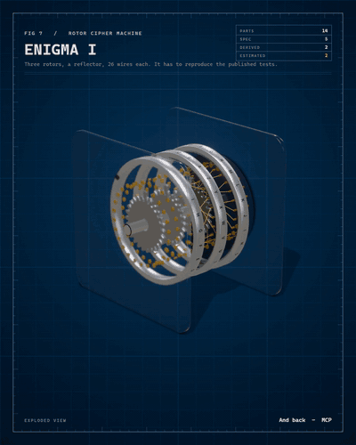
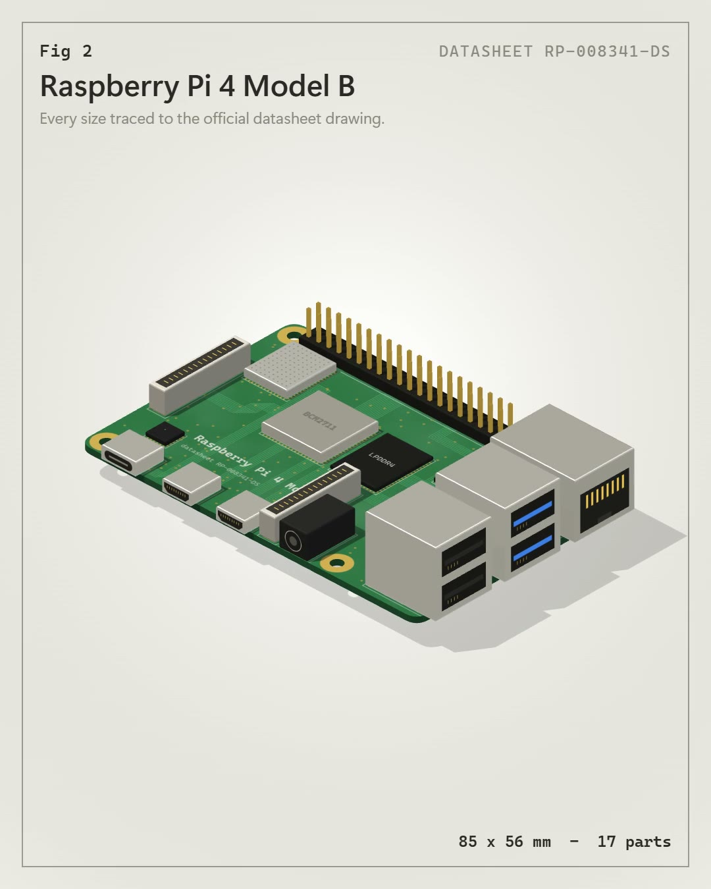
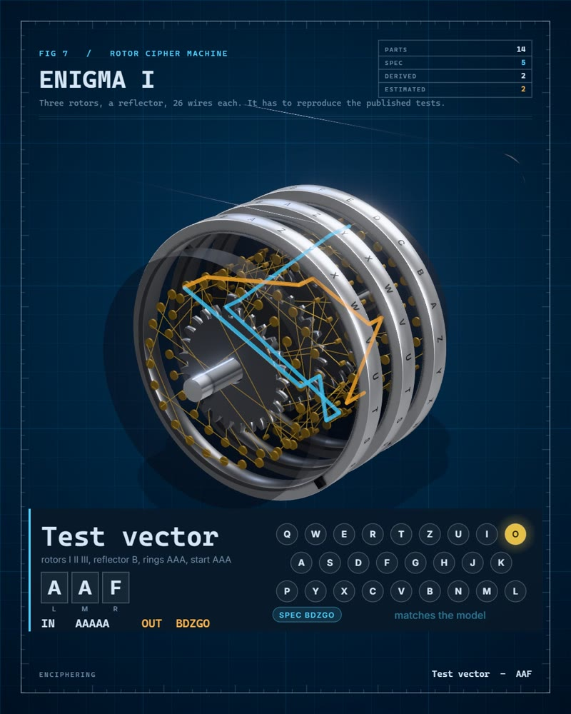

Enigma I
AAAAA to BDZGO, reproducedWiring, notches and stepping are simulated and must match the published tests, including the middle rotor's double step. In the viewer you type on your keyboard.
Give it a real object. It looks the numbers up, writes a spec where every number says where it came from, and renders a film, a viewer and a 3D model. If the numbers do not add up, it does not render.

The model is run against what is published. The Rubik cube is 26 pieces that really turn, with no tables: the 20-move superflip has to flip all 12 edges, the longest sequence has to come back after 1,260 repeats.
Change a tooth, a firing order, a claim: it says exactly what broke. Try it on the hub: the viewer changes one published figure and runs the gate in your browser.
The verdict is never a bare pass: VERIFIED only if something was compared and nothing is pending. Otherwise it says NOTHING CHECKED, INCOMPLETE or DOES NOT PASS, and it refuses the leftovers of a template (example.com, TODO, a number with no claim). Show me what is only a guess.
Every object is listed, with the gate's own numbers and a badge, in the register of verified objects.
And a model has to be recognisable: a stranger shown a label-free still must name it. The hub failed that test, so it now has spokes and a rim.
Each one carries what its model had to reproduce, and says plainly what it could not source.
Wiring, notches and stepping are simulated and must match the published tests, including the middle rotor's double step. In the viewer you type on your keyboard.
26 pieces that really turn, no tables. The model flips all 12 edges in the published 20 moves, comes back after 1,260 repeats of the longest sequence, and counts 43,252,003,274,489,856,000 positions.
A real crank-slider: 16 valves, cams placed from the valve windows. Displacement is computed from bore and stroke, and the published firing order must be possible with the crank. Honda does not publish the rod, so it is dashed.
82.58 TFLOPS, 1,290 Gtex/s, 1,008 GB/s and 24 GB are each computed from the published cores, clocks, bus and data rate. Every variable carries its source, so the estimated memory packages show in another colour. The inside of the card is not published and is dashed.
Two sources have to agree. The gate counts the address and data pins on the pinout and compares them with the published bus widths, and measures the drawn leads against the DIP standard: 2.54 mm pitch, 15.24 mm rows.
Software in motion. A Counter component, its output before and after a click, and the real page. A model written from React's published rules has to predict what the real React 18.3.1 touches: one text, 7 nodes left alone, nothing rebuilt. Measured with a MutationObserver.
A lock cut open, with a real KW1 key. The published table says pin plus cut depth is .501 in for all six heights and the plug is .498 in: the model has to agree, the right key has to put all five splits on the shear line, and a key with one cut three steps off has to leave a pin across it. The key is a polygon with V cuts and the pins ride on its roots.
The three-book icon, doing its job. WinRAR packed a text into 49 bytes; a decoder written only from RFC 1951 reads them token by token and writes the text back. The CRC-32 has to be the one WinRAR stored, and two independent decoders (Node zlib and WinRAR itself) have to agree.
Software, taken apart: the 87 bytes WinRAR 7.23 writes for one small file. A model written from the published format has to reproduce them byte for byte, and the real UnRAR has to accept and extract the archive the model built. Change one byte and the gate fails.
A planetary stage with the sun fixed. The running model gives the ratios the maker publishes as 75, 100 and 133 %. Tooth counts are derived; sizes are estimated and dashed.
A press, not gears. The datasheet's three force points cannot come from one linear spring, and the film plots that instead of hiding it.
Five separate lens rings against one pill, titanium against aluminum, corners of 5.6 against 7 mm. Interiors are not drawn: no readable photo, and the film says so.
Lenses, island and corners measured on official photos, and the POCO's interior measured on the maker's own spare-parts photos.

Every outline traced from the official datasheet drawing, the pinout from its figure 3.
Every example is also a live three.js viewer: orbit, explode, measure, run the mechanism. Type on the Enigma and it enciphers with the published rules.

Load the live viewerThe skill's job is evidence. The engine and the sound are built to serve it.
Spec sheets, teardowns, official photos, published test vectors. It opens the pages and the pictures.
Parts with real dimensions, the evidence behind each number, and how it moves.
Sources, cross-checks, centre distances, published ratios and test vectors. Wrong specs stop here.
Camera, sound and panels are directed from the spec: a film, a viewer and a 3D model.
Published by the maker or a datasheet.
Measured on an official photo, scale from a published size, error stated.
A formula plus a cross-check against another published number.
Nobody publishes it. Drawn dashed, and said out loud.
Clone it into your skills folder and ask for an exploded view of something real. Needs Node 22+, Edge or Chrome, and ffmpeg.
Objects whose numbers can be computed and checked against what is published.